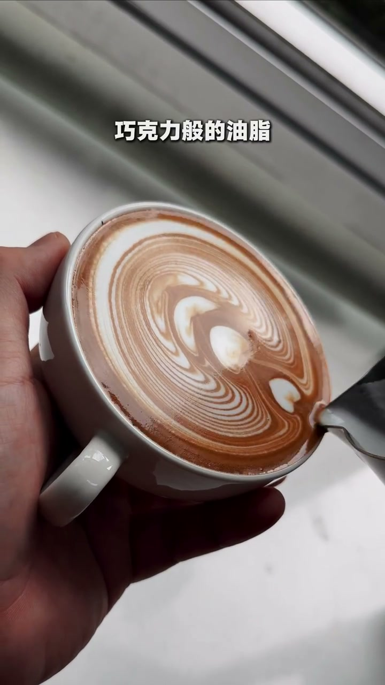
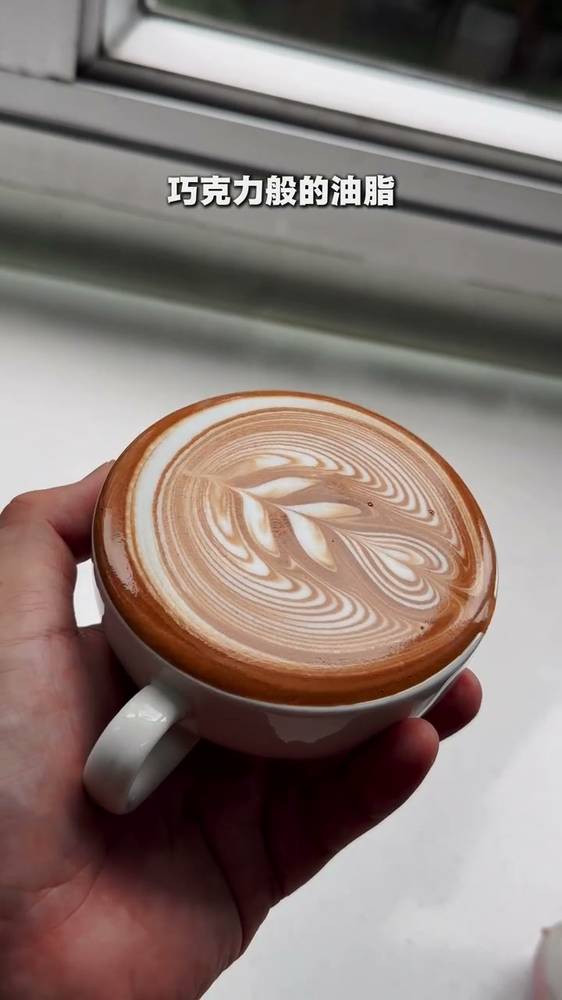

内容要点
本视频为纯画面演示型内容，展示黑巧克力中油脂（可可脂）的呈现状态。视频未配旁白解说，画面通过近距离特写展示黑巧克力的质地、光泽和油脂析出情况。
无旁白说明
Whisper 语音识别未检测到中文旁白内容（噪声概率 0.58），本视频以画面信息传递为主。以下章节描述基于画面观察。
巧克力油光质感展示
[00:00 → 00:13]视频前半段通过近距离镜头展示黑巧克力的表面质地，可见巧克力表面的自然油光和细腻纹理。黑巧克力因可可脂含量较高，在适当温度下会呈现明显的光泽感，这是优质黑巧克力的典型特征。
油脂析出与光泽变化
[00:13 → 00:27]视频后半段可能展示了黑巧克力在不同角度或温度下的油脂表现。可可脂在体温环境下会逐渐融化，使巧克力表面呈现出更明显的油脂光泽。画面通过角度变化展示了巧克力的质感层次。

